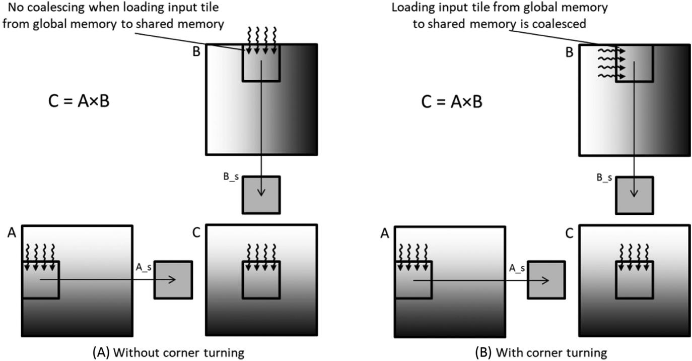
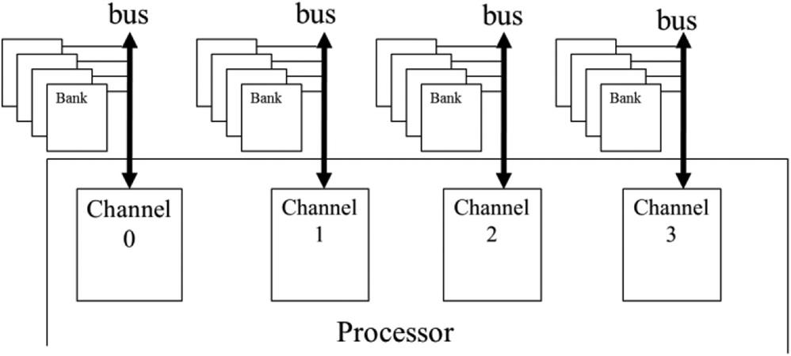
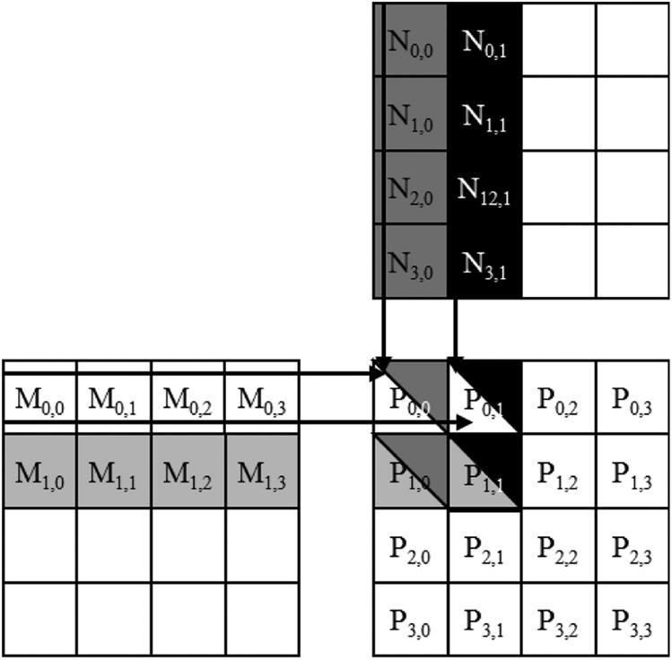
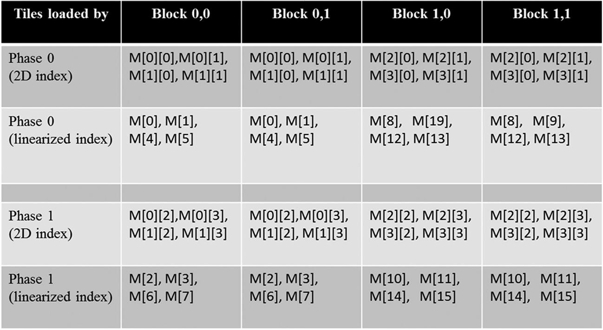
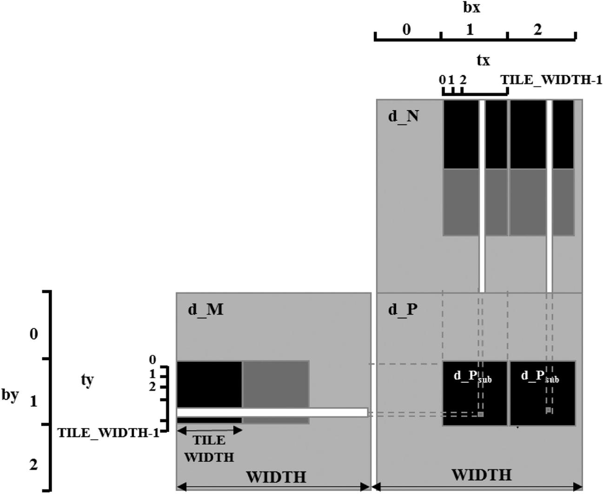
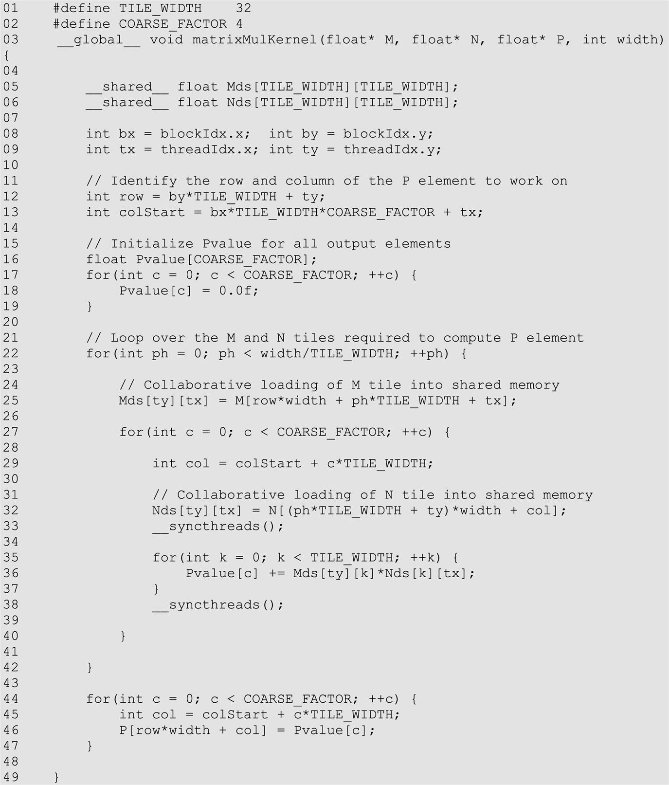
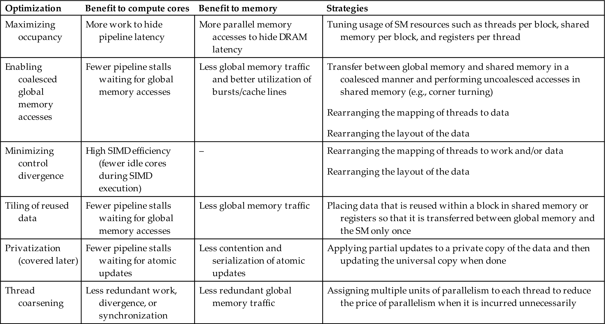
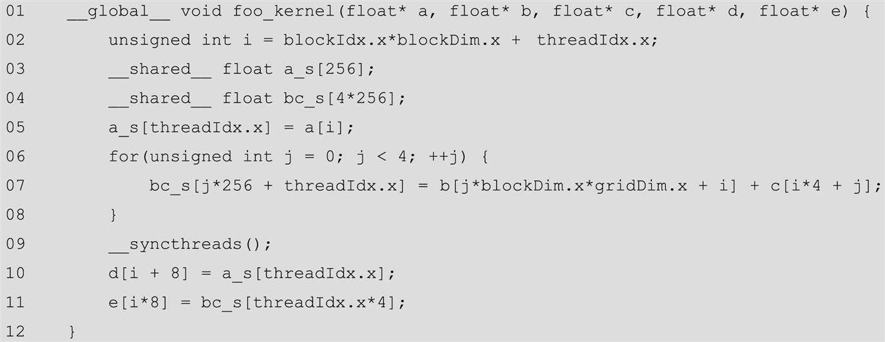

In this chapter we briefly present the off-chip memory (DRAM) architecture and discuss related performance considerations, such as memory coalescing and memory latency hiding. We then discuss an important optimization, thread granularity coarsening, that may target any of the different aspects of the compute and memory architecture, depending on the application. Finally, we wrap up this part of the book with a checklist of common performance optimizations that will serve as a guide for optimizing the performance of the parallel patterns that are discussed in the second and third parts of the book.
Memory bandwidth; memory bank; memory channel; DRAM burst; memory coalescing; corner turning; latency hiding; thread granularity; thread coarsening; performance optimization; performance bottleneck
The execution speed of a parallel program can vary greatly depending on the interactions between the resource demands of the program and the resource constraints of the hardware. Managing the interaction between parallel code and hardware resource constraints is important for achieving high performance in virtually all parallel programming models. It is a practical skill that requires deep understanding of the hardware architecture and is best learned through hands-on exercises in a parallel programming model that is designed for high performance.
So far, we have learned about various aspects of the GPU architecture and their implications for performance. In Chapter 4, Compute Architecture and Scheduling, we learned about the compute architecture of the GPU and related performance considerations, such as control divergence and occupancy. In Chapter 5, Memory Architecture and Data Locality, we learned about the on-chip memory architecture of the GPU and the use of shared memory tiling to achieve more data reuse. In this chapter we will briefly present the off-chip memory (DRAM) architecture and discuss related performance considerations such as memory coalescing and memory latency hiding. We then discuss an important type of optimization—thread granularity coarsening—that may target any of the different aspects of the architecture, depending on the application. Finally, we wrap up this part of the book with a checklist of common performance optimizations that will serve as a guide for optimizing the performance of the parallel patterns that will be discussed in the second and third parts of the book.
In different applications, different architecture constraints may dominate and become the limiting factors of performance, commonly referred to as bottlenecks. One can often dramatically improve the performance of an application on a particular CUDA device by trading one resource usage for another. This strategy works well if the resource constraint that is thus alleviated was the dominating constraint before the strategy was applied and the constraint that is thus exacerbated does not have negative effects on parallel execution. Without such an understanding, performance tuning would be guesswork; plausible strategies may or may not lead to performance enhancements.
One of the most important factors of CUDA kernel performance is accessing data in the global memory, the limited bandwidth of which can become the bottleneck. CUDA applications extensively exploit data parallelism. Naturally, CUDA applications tend to process a massive amount of data from the global memory within a short period of time, In Chapter 5, Memory Architecture and Data Locality, we studied tiling techniques that leverage the shared memory to reduce the total amount of data that must be accessed from the global memory by a collection of threads in each thread block. In this chapter we will further discuss memory coalescing techniques for moving data between global memory and shared memories or registers in an efficient manner. Memory coalescing techniques are often used in conjunction with tiling techniques to allow CUDA devices to reach their performance potential by efficiently utilizing the global memory bandwidth.1
The global memory of a CUDA device is implemented with DRAM. Data bits are stored in DRAM cells that are small capacitors, in which the presence or absence of a tiny amount of electrical charge distinguishes between a 1 and a 0 value. Reading data from a DRAM cell requires the small capacitor to use its tiny electrical charge to drive a highly capacitive line leading to a sensor and set off the sensor’s detection mechanism that determines whether a sufficient amount of charge is present in the capacitor to qualify as a “1.” This process takes tens of nanoseconds in modern DRAM chips (see the “Why is DRAM So Slow?” sidebar). This is in sharp contrast to the subnanosecond clock cycle time of modern computing devices. Because this process is very slow relative to the desired data access speed (subnanosecond access per byte), modern DRAM designs use parallelism to increase their rate of data access, commonly referred to as memory access throughput.
Each time a DRAM location is accessed, a range of consecutive locations that include the requested location are accessed. Many sensors are provided in each DRAM chip, and they all work in parallel. Each senses the content of a bit within these consecutive locations. Once detected by the sensors, the data from all these consecutive locations can be transferred at high speed to the processor. These consecutive locations accessed and delivered are referred to as DRAM bursts. If an application makes focused use of data from these bursts, the DRAMs can supply the data at a much higher rate than would be the case if a truly random sequence of locations were accessed.
Recognizing the burst organization of modern DRAMs, current CUDA devices employ a technique that allows programmers to achieve high global memory access efficiency by organizing memory accesses of threads into favorable patterns. This technique takes advantage of the fact that threads in a warp execute the same instruction at any given point in time. When all threads in a warp execute a load instruction, the hardware detects whether they access consecutive global memory locations. In other words, the most favorable access pattern is achieved when all threads in a warp access consecutive global memory locations. In this case, the hardware combines, or coalesces, all these accesses into a consolidated access to consecutive DRAM locations. For example, for a given load instruction of a warp, if thread 0 accesses global memory location X, thread 1 accesses location X + 1, thread 2 accesses location X + 2, and so on, all these accesses will be coalesced, or combined into a single request for consecutive locations when accessing the DRAM.2 Such coalesced access allows the DRAM to deliver data as a burst.3
To understand how to effectively use the coalescing hardware, we need to review how the memory addresses are formed in accessing C multidimensional array elements. Recall from Chapter 3, Multidimensional Grids and Data, (Fig. 3.3 is replicated here as Fig. 6.1 for convenience) that multidimensional array elements in C and CUDA are placed into the linearly addressed memory space according to the row-major convention. Recall that the term row-major refers to the fact that the placement of data preserves the structure of rows: All adjacent elements in a row are placed into consecutive locations in the address space. In Fig. 6.1 the four elements of row 0 are first placed in their order of appearance in the row. Elements in row 1 are then placed, followed by elements of row 2, followed by elements of row 3. It should be clear that M0,0 and M1,0, though they appear to be consecutive in the two-dimensional matrix, are placed four locations apart in the linearly addressed memory.
Let’s assume that the multidimensional array in Fig. 6.1 is a matrix that is used as the second input matrix in matrix multiplication. In this case, consecutive threads in a warp that are assigned to consecutive output elements will iterate through consecutive columns of this input matrix. The top left part of Fig. 6.2 shows the code for this computation, and the top right part shows the logical view of the access pattern: consecutive threads iterating through consecutive columns. One can tell by inspecting the code that the accesses to M can be coalesced. The index of the array M is k*Width+col. The variables k and Width have the same value across all threads in the warp. The variable col is defined as blockIdx.x*blockDim.x+threadIdx.x, which means that consecutive threads (with consecutive threadIdx.x values) will have consecutive values of col and will therefore access consecutive elements of M.
The bottom part of Fig. 6.2 shows the physical view of the access pattern. In iteration 0, consecutive threads will access consecutive elements in row 0 that are adjacent in memory, shown as “Loads for iteration 0” in Fig. 6.2. In iteration 1, consecutive threads will access consecutive elements in row 1 that are also adjacent in memory, shown as “Loads for iteration 1” in Fig. 6.2. This process continues for all rows. As we can see, the memory access pattern that is formed by the threads during this process is a favorable one that can be coalesced. Indeed, in all the kernels that we have implemented so far, our memory accesses have been naturally coalesced.
Now assume that the matrix was stored in column-major order instead of row-major order. There could be various reasons why this might be the case. For example, we might be multiplying by the transpose of a matrix that is stored in row-major order. In linear algebra we often need to use both the original and transposed forms of a matrix. It would be better to avoid creating and storing both forms. A common practice is to create the matrix in one form, say, the original form. When the transposed form is needed, its elements can be accessed by accessing the original form by switching the roles of the row and column indices. In C this is equivalent to viewing the transposed matrix as a column-major layout of the original matrix. Regardless of the reason, let’s observe the memory access pattern that is achieved when the second input matrix to our matrix multiplication example is stored in column-major order.
Fig. 6.3 illustrates how consecutive threads iterate through consecutive columns when the matrix is stored in column-major order. The top left part of Fig. 6.3 shows the code, and the top right part shows the logical view of the memory accesses. The program is still trying to have each thread access a column of matrix M. One can tell by inspecting the code that the accesses to M are not favorable for coalescing. The index of the array M is col*Width+k. As before, col is defined as blockIdx.x*blockDim.x+threadIdx.x, which means that consecutive threads (with consecutive threadIdx.x values) will have consecutive values of col. However, in the index to M, col is multiplied by Width, which means that consecutive threads will access elements of M that are Width apart. Therefore the accesses are not favorable for coalescing.
In the bottom portion of Fig. 6.3, we can see that the physical view of the memory accesses is quite different from that in Fig. 6.2. In iteration 0, consecutive threads will logically access consecutive elements in row 0, but this time they are not adjacent in memory because of the column-major layout. These loads are shown as “Loads for iteration 0” in Fig. 6.3. Similarly, in iteration 1, consecutive threads will access consecutive elements in row 1 that are also not adjacent in memory. For a realistic matrix there are typically hundreds or even thousands of elements in each dimension. The M elements that are accessed in each iteration by neighboring threads can be hundreds or even thousands of elements apart. The hardware will determine that accesses to these elements are far away from each other and cannot be coalesced.
There are various strategies for optimizing code to achieve memory coalescing when the computation is not naturally amenable to it. One strategy is to rearrange how threads are mapped to the data; another strategy is to rearrange the layout of the data itself. We will discuss these strategies in Section 6.4 and see examples throughout this book of how they can be applied. Yet another strategy is to transfer the data between global memory and shared memory in a coalesced manner and carry out the unfavorable access pattern in shared memory, which provides faster access latency. We will also see example optimizations that use this strategy throughout this book, including an optimization that we will apply now to matrix-matrix multiplication in which the second input matrix is in column-major layout. This optimization is called corner turning.
Fig. 6.4 illustrates an example of how corner turning can be applied. In this example, A is an input matrix that is stored in row-major layout in global memory, and B is an input matrix that is stored in column-major layout in global memory. They are multiplied to produce an output matrix C that is stored in row-major layout in global memory. The example illustrates how four threads that are responsible for the four consecutive elements at the top edge of the output tile load the input tile elements.

The access to the input tile in matrix A is similar to that in Chapter 5, Memory Architecture and Data Locality. The four threads load the four elements at the top edge of the input tile. Each thread loads an input element whose local row and column indices within the input tile are the same as those of the thread’s output element within the output tile. These accesses are coalesced because consecutive threads access consecutive elements in the same row of A that are adjacent in memory according to the row-major layout.
On the other hand, the access to the input tile in matrix B needs to be different from that in Chapter 5, Memory Architecture and Data Locality. Fig. 6.4(A) shows what the access pattern would be like if we used the same arrangement as in Chapter 5, Memory Architecture and Data Locality. Even though the four threads are logically loading the four consecutive elements at the top edge of the input tile, the elements that are loaded by consecutive threads are far away from each other in the memory because of the column-major layout of the B elements. In other words, consecutive threads that are responsible for consecutive elements in the same row of the output tile load nonconsecutive locations in memory, which results in uncoalesced memory accesses.
This problem can be solved by assigning the four consecutive threads to load the four consecutive elements at the left edge (the same column) in the input tile, as shown in Fig. 6.4(B). Intuitively, we are exchanging the roles of threadIdx.x and threadIdx.y when each thread calculates the linearized index for loading the B input tile. Since B is in column-major layout, consecutive elements in the same column are adjacent in memory. Hence consecutive threads load input elements that are adjacent in memory, which ensures that the memory accesses are coalesced. The code can be written to place the tile of B elements into the shared memory in either column-major layout or row-major layout. Either way, after the input tile has been loaded, each thread can access its inputs with little performance penalty. This is because shared memory is implemented with SRAM technology and does not require coalescing.
The main advantage of memory coalescing is that it reduces global memory traffic by combining multiple memory accesses into a single access. Accesses can be combined when they take place at the same time and access adjacent memory locations. Traffic congestion does not arise only in computing. Most of us have experienced traffic congestion in highway systems, as illustrated in Fig. 6.5. The root cause of highway traffic congestion is that there are too many cars all trying to travel on a road that is designed for a much smaller number of vehicles. When congestion occurs, the travel time for each vehicle is greatly increased. Commute time to work can easily double or triple when there is traffic congestion.
Most solutions for reducing traffic congestion involve the reduction of the number of cars on the road. Assuming that the number of commuters is constant, people need to share rides in order to reduce the number of cars on the road. A common way to share rides is carpooling, in which the members of a group of commuters take turns driving the group to work in one vehicle. Governments usually need to have policies to encourage carpooling. In some countries the government simply disallows certain classes of cars to be on the road on a daily basis. For example, cars with odd license plate numbers may not be allowed on the road on Monday, Wednesday, or Friday. This encourages people whose cars are allowed on different days to form a carpool group. In other countries the government may provide incentives for behavior that reduces the number of cars on the road. For example, in certain countries, some lanes of congested highways are designated as carpool lanes; only cars with more than two or three people are allowed to use these lanes. There are also countries where the government makes gasoline so expensive that people form carpools to save money. All these measures for encouraging carpooling are designed to overcome the fact that carpooling requires extra effort, as we show in Fig. 6.6.
Carpooling requires workers who wish to carpool to compromise and agree on a common commute schedule. The top half of Fig. 6.6 shows a good schedule pattern for carpooling. Time goes from left to right. Worker A and Worker B have similar schedules for sleep, work, and dinner. This allows these two workers to easily go to work and return home in one car. Their similar schedules allow them to more easily agree on a common departure time and return time. This is not the case for the schedules shown in the bottom half of Fig. 6.6. Worker A and Worker B have very different schedules in this case. Worker A parties until sunrise, sleeps during the day, and goes to work in the evening. Worker B sleeps at night, goes to work in the morning, and returns home for dinner at 6:00 pm. The schedules are so wildly different that these two workers cannot possibly coordinate a common time to drive to work and return home in one car.
Memory coalescing is very similar to carpooling arrangements. We can think of the data as the commuters and the DRAM access requests as the vehicles. When the rate of DRAM requests exceeds the provisioned access bandwidth of the DRAM system, traffic congestion rises, and the arithmetic units become idle. If multiple threads access data from the same DRAM location, they can potentially form a “carpool” and combine their accesses into one DRAM request. However, this requires the threads to have similar execution schedules so that their data accesses can be combined into one. Threads in the same warp are perfect candidates because they all execute a load instruction simultaneously by virtue of SIMD execution.
As we explained in Section 6.1, DRAM bursting is a form of parallel organization: Multiple locations are accessed in the DRAM core array in parallel. However, bursting alone is not sufficient to realize the level of DRAM access bandwidth required by modern processors. DRAM systems typically employ two more forms of parallel organization: banks and channels. At the highest level, a processor contains one or more channels. Each channel is a memory controller with a bus that connects a set of DRAM banks to the processor. Fig. 6.7 illustrates a processor that contains four channels, each with a bus that connects four DRAM banks to the processor. In real systems a processor typically has one to eight channels, and a large number of banks is connected to each channel.

The data transfer bandwidth of a bus is defined by its width and clock frequency. Modern double data rate (DDR) busses perform two data transfers per clock cycle: one at the rising edge and one at the falling edge of each clock cycle. For example, a 64-bit DDR bus with a clock frequency of 1 GHz has a bandwidth of 8B*2*1 GHz=16GB/s. This seems to be a large number but is often too small for modern CPUs and GPUs. A modern CPU might require a memory bandwidth of at least 32 GB/s, whereas a modern GPU might require 256 GB/s. For this example the CPU would require 2 channels, and the GPU would require 16 channels.
For each channel, the number of banks that is connected to it is determined by the number of banks required to fully utilize the data transfer bandwidth of the bus. This is illustrated in Fig. 6.8. Each bank contains an array of DRAM cells, the sensing amplifiers for accessing these cells, and the interface for delivering bursts of data to the bus (Section 6.1).
Fig. 6.8(A) illustrates the data transfer timing when a single bank is connected to a channel. It shows the timing of two consecutive memory read accesses to the DRAM cells in the bank. Recall from Section 6.1 that each access involves long latency for the decoder to enable the cells and for the cells to share their stored charge with the sensing amplifier. This latency is shown as the gray section at the left end of the time frame. Once the sensing amplifier has completed its work, the burst data is delivered through the bus. The time for transferring the burst data through the bus is shown as the left dark section of the time frame in Fig. 6.8. The second memory read access will incur a similar long access latency (the gray section between the dark sections of the time frame) before its burst data can be transferred (the right dark section).
In reality, the access latency (the gray sections) is much longer than the data transfer time (the dark section). It should be apparent that the access transfer timing of a one-bank organization would grossly underutilize the data transfer bandwidth of the channel bus. For example, if the ratio of DRAM cell array access latency to the data transfer time is 20:1, the maximal utilization of the channel bus would be 1/21=4.8%; that is a 16 GB/s channel would deliver data to the processor at a rate no more than 0.76 GB/s. This would be totally unacceptable. This problem is solved by connecting multiple banks to a channel bus.
When two banks are connected to a channel bus, an access can be initiated in the second bank while the first bank is serving another access. Therefore one can overlap the latency for accessing the DRAM cell arrays. Fig. 6.8(B) shows the timing of a two-bank organization. We assume that bank 0 started at a time earlier than the window shown in Fig. 6.8. Shortly after the first bank starts accessing its cell array, the second bank also starts to access its cell array. When the access in bank 0 is complete, it transfers the burst data (the leftmost dark section of the time frame). Once bank 0 completes its data transfer, bank 1 can transfer its burst data (the second dark section). This pattern repeats for the next accesses.
From Fig. 6.8(B), we can see that by having two banks, we can potentially double the utilization of the data transfer bandwidth of the channel bus. In general, if the ratio of the cell array access latency and data transfer time is R, we need to have at least R + 1 banks if we hope to fully utilize the data transfer bandwidth of the channel bus. For example, if the ratio is 20, we will need at least 21 banks connected to each channel bus. In general, the number of banks connected to each channel bus needs to be larger than R for two reasons. One is that having more banks reduces the probability of multiple simultaneous accesses targeting the same bank, a phenomenon called bank conflict. Since each bank can serve only one access at a time, the cell array access latency can no longer be overlapped for these conflicting accesses. Having a larger number of banks increases the probability that these accesses will be spread out among multiple banks. The second reason is that the size of each cell array is set to achieve reasonable latency and manufacturability. This limits the number of cells that each bank can provide. One may need many banks just to be able to support the memory size that is required.
There is an important connection between the parallel execution of threads and the parallel organization of the DRAM system. To achieve the memory access bandwidth specified for device, there must be a sufficient number of threads making simultaneous memory accesses. This observation reflects another benefit of maximizing occupancy. Recall that in Chapter 4, Compute Architecture and Scheduling, we saw that maximizing occupancy ensures that there are enough threads resident on the streaming multiprocessors (SMs) to hide core pipeline latency, thereby utilizing the instruction throughput efficiently. As we see now, maximizing occupancy also has the additional benefit of ensuring that enough memory access requests are made to hide DRAM access latency, thereby utilizing the memory bandwidth efficiently. Of course, to achieve the best bandwidth utilization, these memory accesses must be evenly distributed across channels and banks, and each access to a bank must also be a coalesced access.
Fig. 6.9 shows a toy example of distributing the elements of an array M to channels and banks. We assume a small burst size of two elements (8 bytes). The distribution is done by hardware design. The addressing of the channels and backs are such that the first 8 bytes of the array (M[0] and M[1]) are stored in bank 0 of channel 0, the next 8 bytes (M[2] and M[3]) in bank 0 of channel 1, the next 8 bytes (M[4] and M[5]) in bank 0 of channel 2, and the next 8 bytes (M[6] and M[7]) in bank 0 of channel 3.
At this point, the distribution wraps back to channel 0 but will use bank 1 for the next 8 bytes (M[8] and M[9]). Thus elements M[10] and M[11] will be in bank 1 of channel 1, M[12] and M[13] will be in bank 1 of channel 2, and M[14] and M[15] will be in bank 1 of channel 3. Although not shown in the figure, any additional elements will be wrapped around and start with bank 0 of channel 0. For example, if there are more elements, M[16] and M[17] will be stored in bank 0 of channel 0, M[18] and M[19] will be stored in bank 0 of channel 1, and so on.
The distribution scheme illustrated in Fig. 6.9, often referred to as interleaved data distribution, spreads the elements across the banks and channels in the system. This scheme ensures that even relatively small arrays are spread out nicely. Thus we assign only enough elements to fully utilize the DRAM burst of bank 0 of channel 0 before moving on to bank 0 of channel 1. In our toy example, as long as we have at least 16 elements, the distribution will involve all the channels and banks for storing the elements.
We now illustrate the interaction between parallel thread execution and the parallel memory organization. We will use the example in Fig. 5.5, replicated as Fig. 6.10. We assume that the multiplication will be performed with 2×2 thread blocks and 2×2 tiles.

During phase 0 of the kernel’s execution, all four thread blocks will be loading their first tile. The M elements that are involved in each tile are shown in Fig. 6.11. Row 2 shows the M elements accessed in phase 0, with their 2D indices. Row 3 shows the same M elements with their linearized indices. Assume that all thread blocks are executed in parallel. We see that each block will make two coalesced accesses.

According to the distribution in Fig. 6.9, these coalesced accesses will be made to the two banks in channel 0 as well as the two banks in channel 2. These four accesses will be done in parallel to take advantage of two channels as well as improving the utilization of the data transfer bandwidth of each channel.
We also see that Block0,0 and Block0,1 will load the same M elements. Most modern devices are equipped with caches that will combine these accesses into one as long as the execution timing of these blocks are sufficiently close to each other. In fact, the cache memories in GPU devices are mainly designed to combine such accesses and reduce the number of accesses to the DRAM system.
Rows 4 and 5 show the M elements loaded during phase 1 of the kernel execution. We see that the accesses are now done to the banks in channel 1 and channel 3. Once again, these accesses will be done in parallel. It should be clear to the reader that there is a symbiotic relationship between the parallel execution of the threads and the parallel structure of the DRAM system. On one hand, good utilization of the potential access bandwidth of the DRAM system requires that many threads simultaneously access data in the DRAM. On the other hand, the execution throughput of the device relies on good utilization of the parallel structure of the DRAM system, that is, banks and channels. For example, if the simultaneously executing threads all access data in the same channel, the memory access throughput and the overall device execution speed will be greatly reduced.
The reader is invited to verify that multiplying two larger matrices, such as 8×8 with the same 2×2 thread block configuration, will make use of all the four channels in Fig. 6.9. On the other hand, an increased DRAM burst size would require multiplication of even larger matrices to fully utilize the data transfer bandwidth of all the channels.
So far, in all the kernels that we have seen, work has been parallelized across threads at the finest granularity. That is, each thread was assigned the smallest possible unit of work. For example, in the vector addition kernel, each thread was assigned one output element. In the RGB-to-grayscale conversion and the image blur kernels, each thread was assigned one pixel in the output image. In the matrix multiplication kernels, each thread was assigned one element in the output matrix.
The advantage of parallelizing work across threads at the finest granularity is that it enhances transparent scalability, as discussed in Chapter 4, Compute Architecture and Scheduling. If the hardware has enough resources to perform all the work in parallel, then the application has exposed enough parallelism to fully utilize the hardware. Otherwise, if the hardware does not have enough resources to perform all the work in parallel, the hardware can simply serialize the work by executing the thread blocks one after the other.
The disadvantage of parallelizing work at the finest granularity comes when there is a “price” to be paid for parallelizing that work. This price of parallelism can take many forms, such as redundant loading of data by different thread blocks, redundant work, synchronization overhead, and others. When the threads are executed in parallel by the hardware, this price of parallelism is often worth paying. However, if the hardware ends up serializing the work as a result of insufficient resources, then this price has been paid unnecessarily. In this case, it is better for the programmer to partially serialize the work and reduce the price that is paid for parallelism. This can be done by assigning each thread multiple units of work, which is often referred to as thread coarsening.
We demonstrate the thread coarsening optimization using the tiled matrix multiplication example from Chapter 5, Memory Architecture and Data Locality. Fig. 6.12 depicts the memory access pattern of computing two horizontally adjacent output tiles of the output matrix P. For each of these output tiles, we observe that different input tiles of the matrix N need to be loaded. However, the same input tiles of the matrix M are loaded for both the output tiles.

In the tiled implementation in Chapter 5, Memory Architecture and Data Locality, each output tile is processed by a different thread block. Because the shared memory contents cannot be shared across blocks, each block must load its own copy of the input tiles of matrix M. Although having different thread blocks load the same input tile is redundant, it is a price that we pay to be able to process the two output tiles in parallel using different blocks. If these thread blocks run in parallel, this price may be worth paying. On the other hand, if these thread blocks are serialized by the hardware, the price is paid in vain. In the latter case, it is better for the programmer to have a single thread block process the two output tiles, whereby each thread in the block processes two output elements. This way, the coarsened thread block would load the input tiles of M once and reuse them for multiple output tiles.
Fig. 6.13 shows how thread coarsening can be applied to the tiled matrix multiplication code from Chapter 5, Memory Architecture and Data Locality. On line 02 a constant COARSE_FACTOR is added to represent the coarsening factor, which is the number of original units of work for which each coarsened thread is going to be responsible. On line 13 the initialization of the column index is replaced with an initialization of colStart, which is the index of the first column for which the thread is responsible, since the thread is now responsible for multiple elements with different column indices. In calculating colStart, the block index bx is multiplied by TILE_WIDTH*COARSE_FACTOR instead of just TILE_WIDTH, since each thread block is now responsible for TILE_WIDTH*COARSE_FACTOR columns. On lines 16–19, multiple instances of Pvalue are declared and initialized, one for each element for which the coarsened thread is responsible. The loop on line 17 that iterates over the different units of work for which the coarsened thread is responsible is sometimes referred to as a coarsening loop. Inside the loop on line 22 that loops over the input tiles, only one tile of M is loaded in each loop iteration, as with the original code. However, for each tile of M that is loaded, multiple tiles of N are loaded and used by the coarsening loop on line 27. This loop first figures out which column of the current tile the coarsened thread is responsible for (line 29), then loads the tile of N (line 32) and uses the tile to compute and update a different Pvalue each iteration (lines 35–37). At the end, on lines 44–47, another coarsening loop is used for each coarsened thread to update the output elements for which it is responsible.

Thread coarsening is a powerful optimization that can result in substantial performance improvement for many applications. It is an optimization that is commonly applied. However, there are several pitfalls to avoid in applying thread coarsening. First, one must be careful not to apply the optimization when it is unnecessary. Recall that thread coarsening is beneficial when there is a price paid for parallelization that can be reduced with coarsening, such as redundant loading of data, redundant work, synchronization overhead, or others. Not all computations have such a price. For example, in the vector addition kernel in Chapter 2, Heterogeneous Data Parallel Computing, no price is paid for processing different vector elements in parallel. Therefore applying thread coarsening to the vector addition kernel would not be expected to make a substantial performance difference. The same applies to the RGB-to-grayscale conversion kernel in Chapter 3, Multidimensional Grids and Data.
The second pitfall to avoid is not to apply so much coarsening that the hardware resources become underutilized. Recall that exposing as much parallelism as possible to the hardware enables transparent scalability. It provides the hardware with the flexibility of parallelizing or serializing work, depending on the amount of execution resources it has. When programmers coarsen threads, they reduce the amount of parallelism that is exposed to the hardware. If the coarsening factor is too high, not enough parallelism will be exposed to the hardware, resulting in some parallel execution resources being unutilized. In practice, different devices have different amounts of execution resources, so the best coarsening factor is usually device-specific and dataset-specific and needs to be retuned for different devices and datasets. Hence when thread coarsening is applied, scalability becomes less transparent.
The third pitfall of applying thread coarsening is to avoid increasing resource consumption to such an extent that it hurts occupancy. Depending on the kernel, thread coarsening may require using more registers per thread or more shared memory per thread block. If this is the case, programmers must be careful not to use too many registers or too much shared memory such that the occupancy is reduced. The performance penalty from reducing occupancy may be more detrimental than the performance benefit that thread coarsening may offer.
Throughout this first part of the book, we have covered various common optimizations that CUDA programmers apply to improve the performance of their code. We consolidate these optimizations into a single checklist, shown in Table 6.1. This checklist is not an exhaustive one, but it contains many of the universal optimizations that are common across different applications and that programmers should first consider. In the second and third parts of the book, we will apply the optimizations in this checklist to various parallel patterns and applications to understand how they operate in different contexts. In this section we will provide a brief review of each optimization and the strategies for applying it.
Table 6.1

The first optimization in Table 6.1 is maximizing the occupancy of threads on SMs. This optimization was introduced in Chapter 4, Compute Architecture and Scheduling, where the importance of having many more threads than cores was emphasized as a way to have enough work available to hide long-latency operations in the core pipeline. To maximize occupancy, programmers can tune the resource usage of their kernels to ensure that the maximum number of blocks or registers allowed per SM do not limit the number of threads that can be assigned to the SM simultaneously. In Chapter 5, Memory Architecture and Data Locality, shared memory was introduced as another resource whose usage should be carefully tuned so as not to limit occupancy. In this chapter, the importance of maximizing occupancy was discussed as a means for also hiding memory latency, not just core pipeline latency. Having many threads executing simultaneously ensures that enough memory accesses are generated to fully utilize the memory bandwidth.
The second optimization in Table 6.1 is using coalesced global memory accesses by ensuring that threads in the same warp access adjacent memory locations. This optimization was introduced in this chapter, where the hardware’s ability to combine accesses to adjacent memory locations into a single memory request was emphasized as a way for reducing global memory traffic and improving the utilization of DRAM bursts. So far, the kernels that we have looked at in this part of the book have exhibited coalesced accesses naturally. However, we will see many examples in the second and third parts of the book in which memory access patterns are more irregular, thereby requiring more effort to achieve coalescing.
There are multiple strategies that can be employed for achieving coalescing in applications with irregular access patterns. One strategy is to load data from global memory to shared memory in a coalesced manner and then perform the irregular accesses on shared memory. We have already seen an example of this strategy in this chapter, namely, corner turning. We will see another example of this strategy in Chapter 12, Merge, which covers the merge pattern. In this pattern, threads in the same block need to perform a binary search in the same array, so they collaborate to load that array from global memory to shared memory in a coalesced manner, and then each performs the binary search in shared memory. We will also see an example of this strategy in Chapter 13, Sorting, which covers the sort pattern. In this pattern, threads write out results to an array in a scattered manner, so they can collaborate to perform their scattered accesses in the shared memory, then write the result from the shared memory to the global memory with more coalescing enabled for elements with nearby destinations.
Another strategy for achieving coalescing in applications with irregular access patterns is to rearrange how the threads are mapped to the data elements. We will see an example of this strategy in Chapter 10, Reduction and Minimizing Divergence, which covers the reduction pattern. Yet another strategy for achieving coalescing in applications with irregular access patterns is to rearrange how the data itself is laid out. We will see an example of this strategy in Chapter 14, Sparse Matrix Computation which covers sparse matrix computation and storage formats, particularly in discussing the ELL and JDS formats.
The third optimization in Table 6.1 is minimizing control divergence. Control divergence was introduced in Chapter 4, Compute Architecture and Scheduling, where the importance of threads in the same warp taking the same control path was emphasized as a means for ensuring that all cores are productively utilized during SIMD execution. So far, the kernels that we have looked at in this part of the book have not exhibited control divergence, except for the inevitable divergence at boundary conditions. However, we will see many examples in the second and third parts of the book in which control divergence can be a significant detriment to performance.
There are multiple strategies that can be employed for minimizing control divergence. One strategy is to rearrange how the work and/or data is distributed across the threads to ensure that threads in one warp are all used before threads in other warps are used. We will see an example of this strategy in Chapter 10, Reduction and Minimizing Divergence, which covers the reduction pattern, and Chapter 11, Prefix Sum (Scan), which covers the scan pattern. The strategy of rearranging how work and/or data is distributed across threads can also be used to ensure that threads in the same warp have similar workloads. We will see an example of this in Chapter 15, Graph Traversal, which covers graph traversal, in which we will discuss the tradeoffs between vertex-centric and edge-centric parallelization schemes. Another strategy for minimizing control divergence is to rearrange how the data is laid out to ensure that threads in the same warp that process adjacent data have similar workloads. We will see an example of this strategy in Chapter 14, Sparse Matrix Computation, which covers sparse matrix computation and storage formats, particularly when discussing the JDS format.
The fourth optimization in Table 6.1 is tiling data that is reused within a block by placing it in the shared memory or registers and accessing it repetitively from there, such that it needs to be transferred between global memory and the SM only once. Tiling was introduced in Chapter 5, Memory Architecture and Data Locality, in the context of matrix multiplication, in which threads processing the same output tile collaborate to load the corresponding input tiles to the shared memory and then access these input tiles repetitively from the shared memory. We will see this optimization applied again in most of the parallel patterns in the second and third parts of the book. We will observe the challenges of applying tiling when the input and output tiles have different dimensions. This challenge arises in Chapter 7, Convolution, which covers the convolution pattern, and in Chapter 8, Stencil, which covers the stencil pattern. We will also observe that tiles of data can be stored in registers, not just shared memory. This observation is most pronounced in Chapter 8, Stencil, which covers the stencil pattern. We will additionally observe that tiling is applicable to output data that is accessed repeatedly, not just input data.
The fifth optimization in Table 6.1 is privatization. This optimization has not yet been introduced, but we mention it here for completeness. Privatization relates to the situation in which multiple threads or blocks need to update a universal output. To avoid the overhead of updating the same data concurrently, a private copy of the data can be created and partially updated, and then a final update can be made to the universal copy from the private copy when done. We will see an example of this optimization in Chapter 9, Parallel Histogram, which covers the histogram pattern, in which multiple threads need to update the same histogram counters. We will also see an example of this optimization in Chapter 15, Graph Traversal, which covers graph traversal, in which multiple threads need to add entries to the same queue.
The sixth optimization in Table 6.1 is thread coarsening, in which multiple units of parallelism are assigned to a single thread to reduce the price of parallelism if the hardware was going to serialize the threads anyway. Thread coarsening was introduced in this chapter in the context of tiled matrix multiplication, in which the price of parallelism was loading of the same input tile redundantly by multiple thread blocks that process adjacent output tiles. In this case, assigning one thread block to process multiple adjacent output tiles enables loading an input tile once for all the output tiles. In the second and third parts of the book, we will see thread coarsening applied in different contexts with a different price of parallelism each time. In Chapter 8, Stencil, which covers the stencil pattern, thread coarsening is applied to reduce the redundant loading of input data, as in this chapter. In Chapter 9, Parallel Histogram, which covers the histogram pattern, thread coarsening helps to reduce the number of private copies that need to be committed to the universal copy in the context of the privatization optimization. In Chapter 10, Reduction and Minimizing Divergence, which covers the reduction pattern, and in Chapter 11, Prefix Sum (Scan), which covers the scan pattern, thread coarsening is applied to reduce the overhead from synchronization and control divergence. Also in Chapter 11, Prefix Sum (Scan), which covers the scan pattern, thread coarsening also helps reduce the redundant work that is performed by the parallel algorithm compared to the sequential algorithm. In Chapter 12, Merge, which covers the merge pattern, thread coarsening reduces the number of binary search operations that need to be performed to identify each thread’s input segment. In Chapter 13, Sorting, which covers the sort pattern, thread coarsening helps improve memory coalescing.
Again, the checklist in Table 6.1 is not intended to be an exhaustive one, but it contains major types of the optimizations that are common across different computation patterns. These optimizations appear in multiple chapters in the second and third parts of the book. We will also see other optimizations that appear in specific chapters. For example, in Chapter 7, Convolution, which covers the convolution pattern, we will introduce the use of constant memory. In Chapter 10, Reduction and Minimizing Divergence, which covers the scan pattern, we will introduce the double-buffering optimization.
In deciding what optimization to apply to a specific computation, it is important first to understand what resource is limiting the performance of that computation. The resource that limits the performance of a computation is often referred to as a performance bottleneck. Optimizations typically use more of one resource to reduce the burden on another resource. If the optimization that is applied does not target the bottleneck resource, there may be no benefit from the optimization. Worse yet, the optimization attempt may even hurt performance.
For example, shared memory tiling increases the use of shared memory to reduce the pressure on the global memory bandwidth. This optimization is great when the bottleneck resource is the global memory bandwidth and the data being loaded is reused. However, if, for example, the performance is limited by occupancy and occupancy is constrained by the use of too much shared memory already, then applying shared memory tiling is likely to make things worse.
To understand what resource is limiting the performance of a computation, GPU computing platforms typically provide various profiling tools. We refer readers to the CUDA documentation for more information on how to use profiling tools to identify the performance bottlenecks of their computations (NVIDIA, Profiler). Performance bottlenecks may be hardware-specific, meaning that the same computation may encounter different bottlenecks on different devices. For this reason the process of identifying performance bottlenecks and applying performance optimizations requires a good understanding of the GPU architecture and the architectural differences across different GPU devices.
In this chapter we covered the off-chip memory (DRAM) architecture of a GPU and discussed related performance considerations, such as global memory access coalescing and hiding memory latency with memory parallelism. We then presented an important optimization: thread granularity coarsening. With the insights that were presented in this chapter and earlier chapters, readers should be able to reason about the performance of any kernel code that they come across. We concluded this part of the book by presenting a checklist of common performance optimizations that are widely used to optimize many computations. We will continue to study practical applications of these optimizations in the parallel computation patterns and application case studies in the next two parts of the book.
